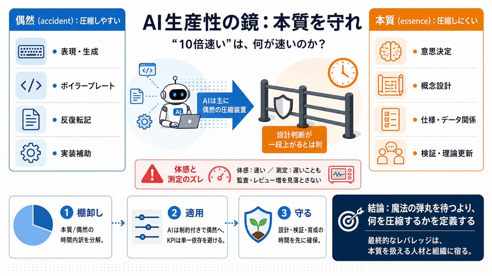

What’s the Difference Between To and For? | Grammarly
To and for are similar, so it’s easy to get them confused. Both to and for are prepositions, one of the eight parts of s…

To and for are similar, so it’s easy to get them confused. Both to and for are prepositions, one of the eight parts of s…
Since of and for are both prepositions, you can’t differentiate them by part of speech alone. A preposition is a relatio…
Western Europe Southeast Asia Names of Colleges, Universities, and Other Schools If the usage is non-specific a sc…
on that final position. We know this movement because put is a movement verb. It's the same for other verbs like throw, …
A good way to understand the difference between in and on is to examine the two sentences below. In the first one, the u…